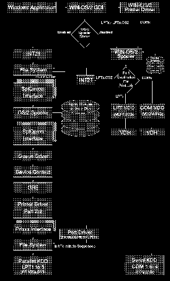

Low Level View of the WIN-OS/2 Printing Data Flow
We apologize for the picture quality. The original was not available.
[Back: Detailed View of the WIN-OS/2 Data Connections]
[Next: File Structure of Adobe Type Manager]